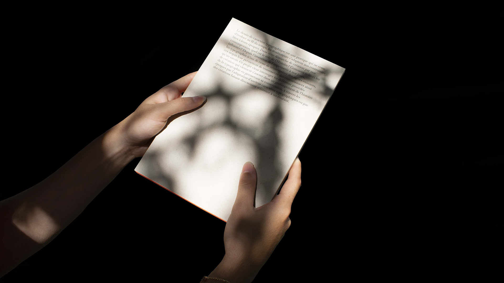
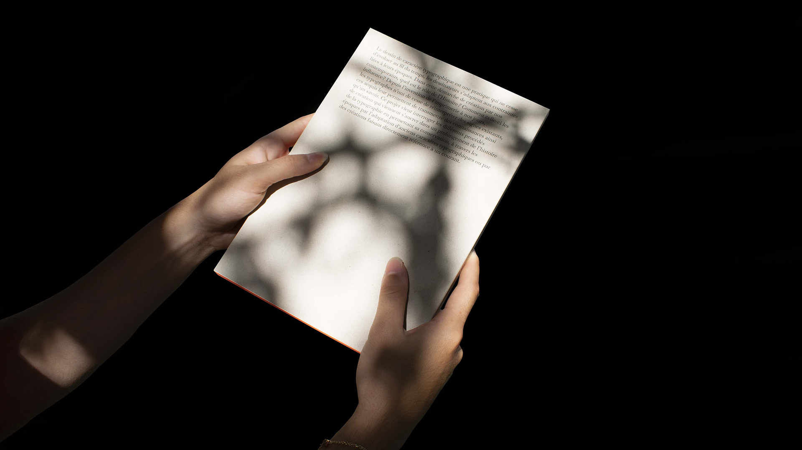
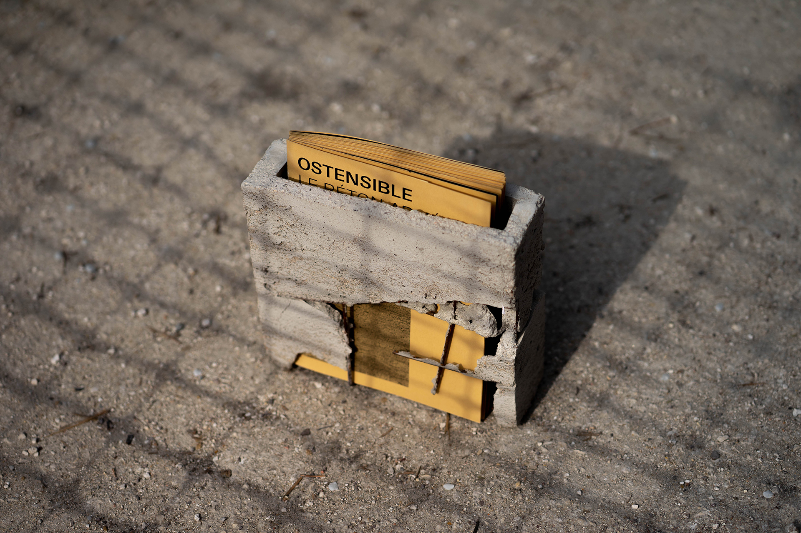
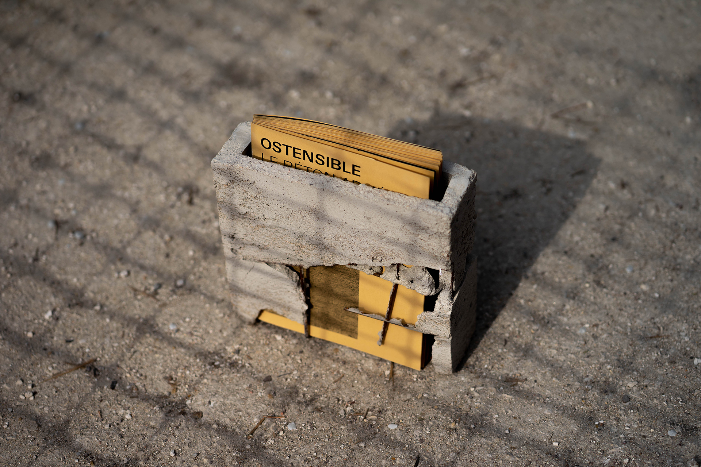
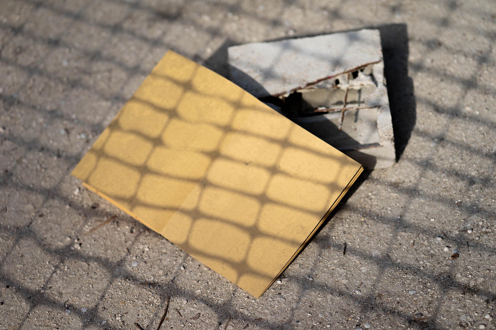
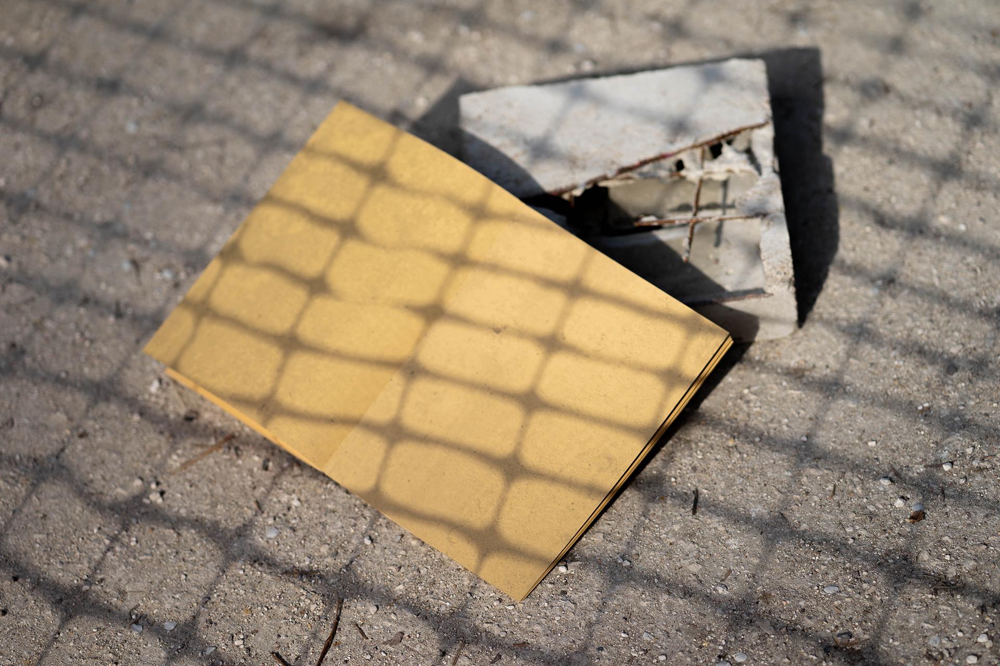

À la recherche


In Search Of tells the fictional story of a person generated by artificial intelligence. The story is read through a series of differents texts, following the ages of life, from birth to death. Mirrors of our lives, becauses generated from human data, the texts and images answer each other, questionning the notion of identity and easthetic norm. This generated person isincarnation of each one or of nobody. Summarizes and questions the way of producing with a tool wich does not know how to do anything, if not to reproduce everything. During this workshop I worked with Aurélien Brigaud and Antoine Jarno.
630 pages
Cover 250gr/m2
Paper coated 80gr/m2
Glued square back
Matte varnish


 



 

 
